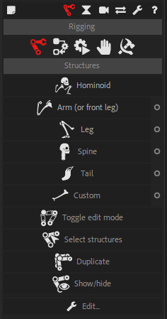
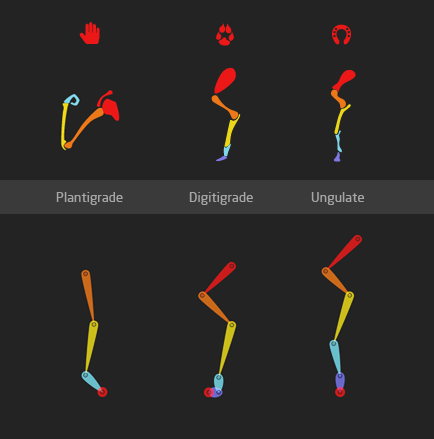
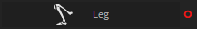
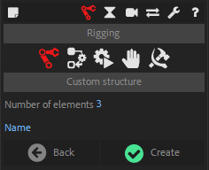

Create structures

There are several ways to create Structures with Duik, depending on what you need. As all the other tools in Duik Bassel, the Struture creation tools try to be smart, and change their behaviour depending on the context (i.e. the current selection in the current composition).
You can create either complete characters (e.g. Homonoïds, etc.), single limbs (e.g. Arms, Legs, etc.), or custom structures. Except for complete characters, the way the Structures are created will change depending on the selection.
Complete characters are always created in the center of the composition, and nothing is linked to the new Structure, you’ll have to create the links between the artwork and the Structures by yourself later.
Without any selection in the composition, predefined limbs and custom Structures will also be created in the center of the composition, but with a selection, they will be moved to the selected properties or layers, and you have the option to automatically parent or link them back to the newly created Structures.
If Bétzier path properties (i.e. mask path or shape path) are selected, one Structure will be created for each path, with one Structure element for each vertex of the path.
Vertex and tangents will both be linked to the corresponding Structure elements, but there is no individual control for tangents. You can create them later if you need with the Bones tool.
Note
As Structures can be created on a bezier path with any version of After Effects, paths can be linked back to the Structures only on After Effects CC2018 and newer.
If puppet pins are selected, one Structure will be created for each layer, with one Structure element for each puppet pin. The order of the elements of the Structure depends on the order of the pins in the layer stack. You can re-order them before creating the Structure to adjust how the Structure is created and optionally how the pin is linked to it.
If layers are selected, without any other property, one Structure will be created. Each Structure element will be moved to a corresponding layer, and the layer can optionally be parented to it.
Note
If there are selected layers with their anchor points at the same location in the composition, the Structure will not use the layers’ position, and layers will not be parented, to avoid weird issues happening when layers share the same anchor point in the same Structure chain.
Hint
You can separately activate the automatic linking of layers, pins and paths to the Structure elements in the edition panel of the Structures.
Holding the Ctrl key when creating Structures will enable you to temporarily disable or enable this automatic linking depending on the preferences you set.
Warning
Never duplicate nor copy and paste Structures in After Effects, always create new Structures or use the Duplicate button in the Structures panel of Duik.
Internal unique identifiers are associated with the Structures, which won’t be updated when you copy or duplicate the Structures in After Effects. The Auto-rig and other rigging tools in Duik need these identifiers to work correctly and may fail if they are not set properly. The Duplicate tool does this.
Hominoid

This tool will create Structures for a complete hominoid with a spine, two legs and two arms, using the settings of the individual limbs set in the Structures panel.

Note
Hominoids (Hominoidea) are a branch of tailless anthropoid primates native to Africa and Southeast Asia. They are distinguished from other primates by a wider degree of freedom of motion at the shoulder joint. There are two extant branches of the superfamily Hominoidea: the gibbons, or lesser apes; and the hominids, or great apes (orangutans, gorillas, chimpanzees, humans).
Hint
Alt + Click on the button for a demo of what Duik can do!
Types of walking animals
The rig, and the animation, of the animal you’re working on depends a lot on how it walks. There are three main ways of walking among vertebrates.
| Type | Description | Examples | Notes |
|---|---|---|---|
| Plantigrade | Animals which put the whole foot on the ground, with the heel touching the ground when they walk. | Primates, bears, rabbits… | The ones nearly equal to humans. |
| Digitigrade | Animals which walk on their fingers. | Dogs and all canines, cats and other felines, dinosaurs, walking birds… | The friends of humans. |
| Ungulate | Animals which walk on the tip of their fingers, who usually have hoofs. | Horses, cattle, girafes, pigs, deers, camels, hippopotamuses… | The ones humans eat |
For each limb you can create with Duik, you have to choose the type of walking animal it is (for arms and legs), and which parts of the limbs must be created.

 Arm
Arm
Creates a Structure for the arm or the front leg of a quadruped.

Click the ○ button to adjust the settings for the arm.


You can check which part of the limb is present on your character. The autorig will adapt to every configuration, but using all of them (except for claws when rigging humans) can ensure a nice rig and a more realistic animation.

Animation by Jissse
 Leg
Leg
Creates a Structure for the (rear) leg of a biped or a quadruped.

Click the ○ button to adjust the settings for the leg.


The autorig will adapt to every configuration, but using all of them can ensure a nice rig and a more realistic animation (with a proper foot roll).
 Spine
Spine
Creates a Structure for the spine of any vertebrate.

Click the ○ button to adjust the settings for the spine.

You can check which part of the spine is present on your character. You can divide the spine and the neck in as many layers as you want (or none). The autorig will adapt to every configuration.
 Tail
Tail
Create a Structure for the tail of any animal.
Click the ○ button to adjust the settings for the tail.

You can divide the tail in as many layers as you want. The autorig will adapt to every configuration.

Illustration by Jissse
With Tails, you can even rig fishes very easily.
Tip
In the Autorig options, you can choose between rigging tails using Bezier IK controls or FK (with automatic follow through and overlap) controls. The latter achieves a natural motion more easily, but IK could be needed in some cases, like if the tail interacts with anything else.
 Custom Structure
Custom Structure
Creates a standard, custom Structure.

Click the ○ button to adjust the settings for the custome structure.

You can set the number of elements in the Structure, and choose a name for it.
Hint
Hold the Alt button on your keyboard to assign a new random color to the Structure.